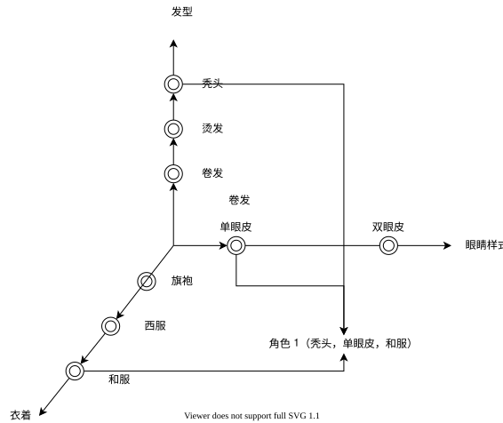
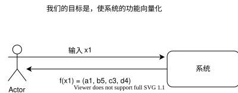
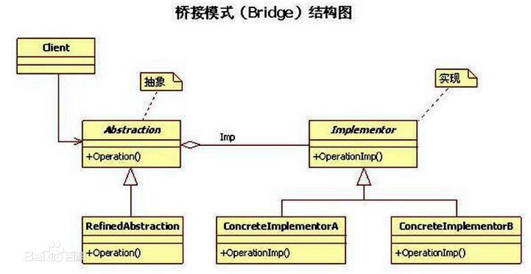
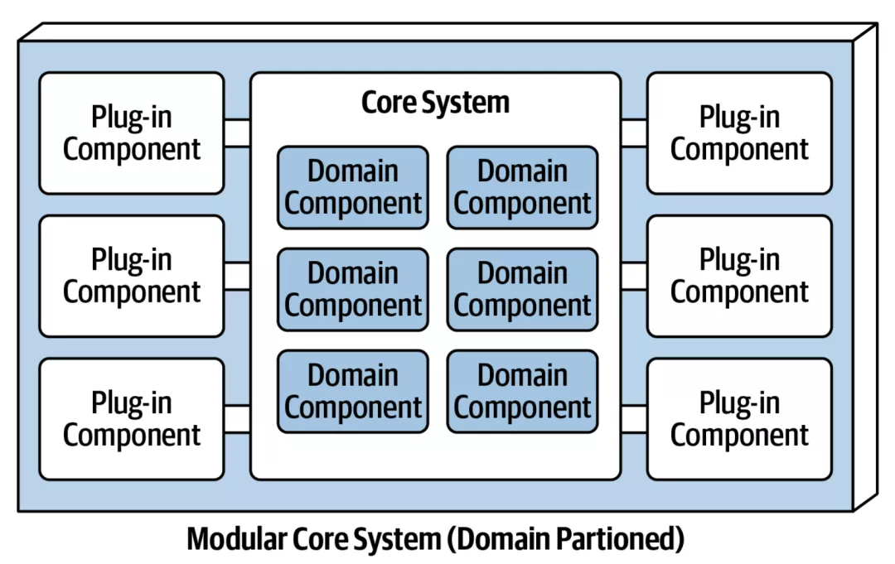
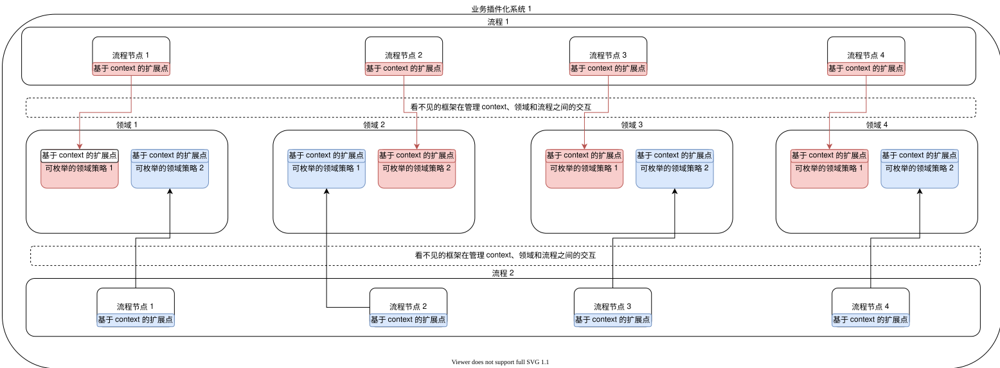
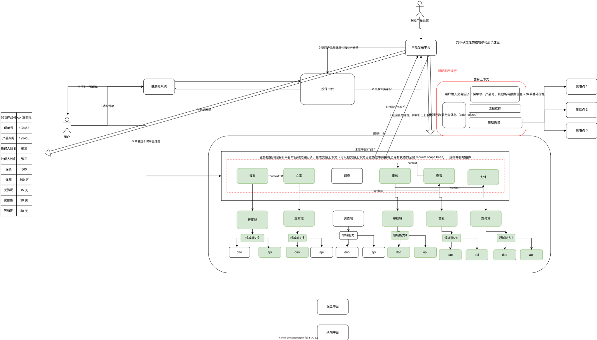
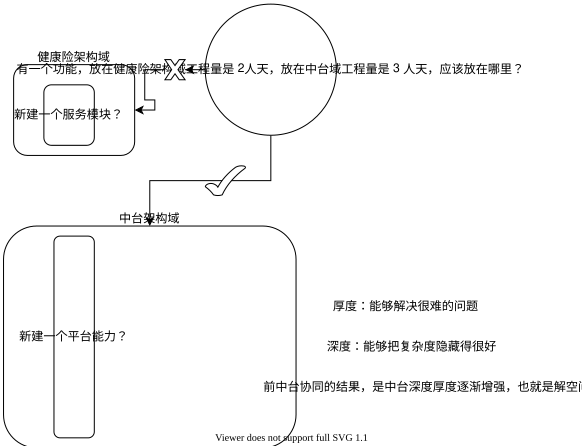
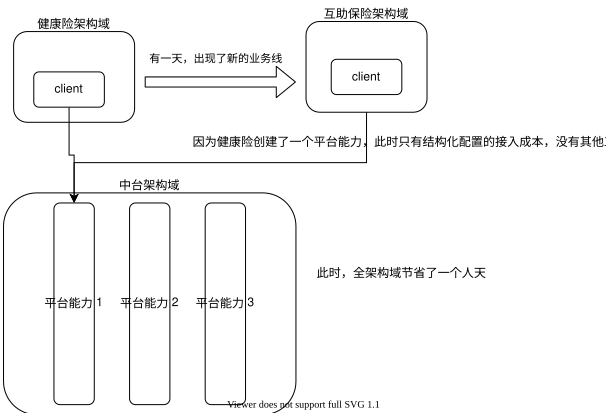
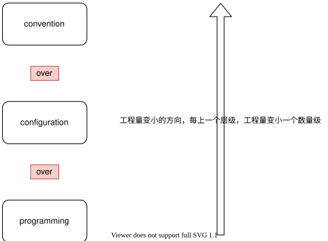
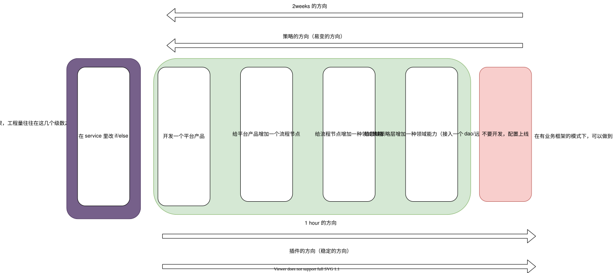

面向不确定性编程
- 本文是如何写《复杂业务系统》和《我眼中的阿里经济体的中台架构演进》的续篇。
- 本文探讨到底不确定性和复杂性源于何处，并引出互联网业务系统的一种“可适应性架构”，适用于平台型业务系统。
定义问题
软件难写，是软件工程师的共同感觉。
特别地，对于中国的互联网公司的“业务团队”的工程师而言，“业务系统”在业务的复杂度堆积到一定程度以后，软件本身的“熵增效应”会特别严重：一个业务系统的内部会充满了难以理解的分层、堆积如山的 if-else 分支，以至于很多工程师都不愿意进入密密麻麻复杂逻辑深处，去做高风险的维护工作。但是，只要公司正常发展，业务总会越做越大/复杂，所以要维持系统的可维护性，成为了一门很重要的学问。
现实中的系统的高复杂度问题，可以简单表述为“不确定性矛盾”：需求具有高度不确定性，一直都在高速变化；而工程师高度倾向于确定实现（因为高度抽象、反复抽象的成本很高），所以具体的实现难以变更，这两种相反的特性难以调和。
其实我们现在遇到的困境，历史上发生过很多次，比如我们现代的很多软件工程理论，就是从历次的软件危机中诞生的。归根结底，软件之所以叫软件（Software），是因为相对于硬件，它应该是易于变更的。这些软件工程理论演化到现代，有两条基本的原则是放之四海皆准的：
- 计算机程序是写给人看的，恰好能够运行。
- 软件设计其实就是对于抽象复杂度的控制。
具体地，解决不确定性问题的解法其实是：尽量用分门别类的方法来理清软件的确定部分，保留余地给不确定性，使用特定的表达手法来表达不确定性。可维护性问题只是工程量问题，以不变应万变是工程量最小的方案。
正交分解法
系统性问题，需要系统性的解：系统性的问题如果可以下钻，就可以自顶向下地把问题拆解成子问题，如果子问题都有解，那么它们组合起来就会得到一个系统性的解。
笛卡尔的解
但应该用什么方法来下钻呢？笛卡尔坐标系可以给我们提供经典思路：
- 把一个复杂的，让人大脑容量爆炸的问题先扔掉。
- 先建立一套彼此可以正交组合出无数能力的基础工具系统。
- 自顶向下地拆解问题。
- 自底向上地组合问题的解。
捏脸系统
上图是一个网络游戏中常见的建立游戏角色的系统，玩家通常可以指定游戏角色的发型、衣着和眼睛样式。按照笛卡尔坐标系的思路：
- 我们可以建立三个单一维度：发型、衣着和眼睛样式。
- 通过穷举的方法，设计和限定每个单一维度的枚举值。
- 设计一个组合方法，来表达这种组合。

如果建立这种正交体系，则用户的输入是对于不同的枚举值的选择，用户得到的输出是近似向量形式的。
这种向量形式的表达能力极强，仅以上图为例：
- 用户实际可选的最终结果是这个解空间的笛卡尔积的数量为：233=18 种组合。
- 每增加一个维度上的枚举值，都可以很简单地放大解空间：在和服之外加上一种“墨西哥服装”，则解空间实际上变为 24 种组合。
- 每一种枚举值都非常稳定，因为他们彼此互斥，所以非常稳定，不会因为用户的输入而产生混乱的变化。
- 组合的方法非常有规律，只要把向量的维度顺序排好，按部就班地输出枚举即可，组合逻辑本身并不混乱，也不受枚举值的影响。
- 我们还可以再通过增加维度的方法，极大地扩充我们的解空间。如果我们在 2 的基础上再增加一个有 3 枚举值的维度“鼻子”，我们的解空间进一步升级为 72 种组合。
这种正交分解法正是面向不确定性编程的方法：
- 应该尽量把整个解空间分解出多个维度。
- 在维度上找到具体的解，这种具体的解必须是互斥的、可枚举的、甚至是可演绎的（这套分解方法，也是美团基本功的《金字塔原理》里经常思考的不漏不重），也必须是具体的、可实施的。这些解和维度，就是我们系统的“确定性部分”。
- 找到一种组合方法，将这种向量组合出来，如果有可能将组合的策略交给用户。这种组合的具体值，就是我们系统的“不确定性”部分。
我们的系统必须先寻找到确定性部分，然后才能支撑不确定性部分的运行。

实际上，现实中的笛卡尔坐标系，只要有一套计算流程，可以表达任意复杂的曲线和图形。
百科全书式的架构师
那么如何寻找确定性部分？通常的思维方式是：
到底怎样的穷举、归纳、演绎是好的？引用《软件方法》里的观点：建模带来竞争优势。如果我们运用 DDD 的方法进行分析，我们对核心域的理解决定了我们是不是能够找到确定性的部分。所以对于业务系统的架构师而言，对自己的系统的百科全书式的理解是重要的。理解自己的系统到底有多少个环节，每个环节有多少变化，至关重要。
所以这一段的结论是：复杂系统可以用正交分解来解。
重新说说什么是系统的高度-为什么要旗帜鲜明地反对意大利面条式的代码
面向不确定性的系统，必然是可维护的系统，可维护的系统应当是有高度的（这个问题最初在 《我眼中的阿里经济体的中台架构演进》里有提到，但这里还是要再提一次）。
工程量问题
在这里要先抛出一个观点：一切可维护性问题，都是工程量问题。内部架构不当的系统，改造工程量特别大。工程量最小的改造方法，是只改造一个模块。
线性复杂度代码
难以理解的代码通常是这样的：
1 | |
有经验的工程师看到这样的代码，第一反应是，这一段代码的维护成本很高。但维护成本到底高在哪里？
这种意大利面条式的代码，难以维护的原因在于阅读的时间复杂度太高。缺乏结构设计的代码就好像一个扁平的线性表，人脑阅读的时候的处理过程和平扫线性表算法一样，时间复杂度是线性的（O(n)）。人脑天然反感线性复杂度的单调扫描，所以阅读这种代码心智负担（mind burden）很重，既容易出错，也难以维护。更大的阅读量，一定带来更大的改造量。
对数复杂度代码
我们经常说好维护的代码是什么样的呢？比如 Spring 自己的核心流程：
1 | |
这样的代码为什么可维护性好？因为这样的代码把解决问题的方案拼成了树形结构。对上层模块而言，每一行代码都是对下层的模块的点到为止的调用，而不是对同层方法的堆叠，如果存在下层模块，则具体的逻辑全部交给下层模块实施，本层只做策略编排。这种类似多路平衡树的阅读时间复杂度实际上是对数复杂度（O(logN)）（类似数据库的存储搜索方法），这种复杂度对于人脑而言是舒服的，人可以一步一步，精确地定位到特定的范围，逐步解决问题。我们经常提到的 Gof 23 种设计模式，也充满了这种分层解耦的设计思路，运用特别广泛的桥接模式、工厂方法模式和模板方法模式，都使用了这种管理复杂度的技巧。但设计模式又并不仅仅使系统有树形结构，节点和节点之间的连接还是通过扩展点连接的。所以我们在同层里增加具体的枚举值的时候，是用具体值对系统进行扩展，而不是修改（又见 OCP 法则）。

这就是为什么我们在《如何写复杂业务系统》里提到的，坏的代码很像流水账，而好的代码像博士论文。而且好的代码必须保持抽象的层次一致性。
现实中，意大利面条的代码为何总是会让维护者也写成意大利面条式的代码？因为几代维护者已经把线性复杂度的代码写得很长很长，除非遗留代码的维护者制造一个大的结构，把所有的代码分割进小模块里，否则单纯地局部模块化只能制造抽象的层次不一致（违反了上面提到的抽象的层次一致性）。这就是很多时候大家都不愿意重构，总是喜欢重写的原因。修改难以维护的老系统的时候，既要花线性复杂度的时间读完一个大组件的代码，也得仔细斟酌，写出适应这种线性复杂度的 patch（更大的阅读量带来了更大的改造工程量）。
在这里我们可以再谈谈 OCP 原则在实战中的意义：在不能进行有效的复杂度治理的工程里，所有的代码逻辑共用复杂度，原本复杂度为 9 的项目，在新增一个复杂度为 1 的解决方案的时候，可能新解决方案要处理的最终复杂度是 10 而不是 1；而引入了带有组件封装色彩的设计模式以后， 新增一个组件的复杂度就仅止于这个组件的复杂度边界本身。组件和组件之间的封装边界隔离了复杂度，组件支撑起了框架，也实现了复杂度的平行添加而不是线性添加。所以烂代码是把问题和解决方案混合在一起的，通篇都是流水账，好的代码是把问题区分开，把解法挂在问题这个钩子上，只有组件内部是记叙文，组件之间都是一个个模型、对象。
总结一下这个章节的核心观点是：面向不确定性的系统必然是易于维护的系统，易于维护的系统是必然是有高度的系统，有高度的系统的终极形态是：树形的，分层带有专门扩展点系统。工程量的大小，取决于扩展点的大小。
有一类树形系统的演化思路，大概是这样的：
扩展点的学问
1 | |
有读者可能会问，为什么阿里的代码要使用 context 作为方法参数，而不是使用具体的参数来调用方法？
从面向框架编程，到面向插件编程
这里要引入一个观点：框架决定 API，业务框架决定业务 API，由业务 API 关联业务组件。
现实的日常工作中，我们谈到框架/库的时候，很多时候我们意识不到一点：
- 我们在为框架写代码，真正调用我们的代码的代码，是框架本身。
- 我们在调用库的组件里的代码，真正调用库代码的代码，是我们的业务。
- 好的服务= 好的框架 + 好的组件
但我们和框架的交互非常地简单，很多时候我们甚至感觉不到框架的存在（这从某种意义上来讲是 Spring 之类的框架的成功之处）。
我们常见的微内核操作系统、Spring 框架之类的复杂系统，都要求客户端对根据它的 API 规范进行“组件编程”。

在这种架构模式下面，整体的“策略的编排”是由一个单独的层次实现的，所有的业务方遵循统一的 API 标准，实现业务流程的一部分。基于这种架构写出来的系统有几个优点：
- 业务策略的编排和策略的实现完全解耦，策略的实现插件化（什么是插件化，业界并没有严格明确的定义，此处借用了这个流行的概念）。插件化是一种未来的开发理念，插件化的终极状态是配置化（反过来也一样）。这是由帕累托法则决定的。
- 因为有隔离，组件稳定性极强，适合“原子化的组件设计模式”
实际上因为这种原子化的优势，这种设计模式在操作系统驱动领域大行其道；而这种原子化的能力，恰好也适合领域驱动设计里对领域能力“原子化正交化”的要求。插件化架构，很适合领域驱动设计。
假设我们有一个业务框架，处于我们的业务代码和技术框架之间，而我们把我们的业务代码组件化，作为更上层系统的库，我们大概会得到这样一个架构：

这个架构里面：
- 组件通过扩展点被上层调用。
- 有一个隐式的框架，管理 context，管理流程，编排插件。
这样就呼应了我们在第一个章节里讲到的“正交分解再组合”的设计思路。因为，指定了 context api 这种标准化扩展点，所以理论上：
- 每个领域可以无限扩充流程节点
- 每个领域内部可以无限扩充可枚举的领域策略
基于这两个优点，我们就可以得到一个具有演绎性的系统，如果我们有意识地给这种系统增加层次，我们就呼应了我们的第二个章节的观点，得到了一个有高度的系统。
引入业务身份
在这里要引入一个概念：业务身份（bizIdentity）。业务身份实际上是第一章里面向量表达式“f(x1) = (a1, b5, c3, d4)”里的 x1（有 x1 自然会有 x2、x3、x4……，业务身份也是可以穷举、演绎的）。
业务身份可以被理解为一套坐标，由业务身份可以定位选择：流程之间怎么编排、各个领域能力的具体的枚举策略是什么。
产品的完形填空
如果一个我们拥有一个业务组件化的系统，我们可以得到得到一个产品发布平台。
- 这系统解决问题的思路是结构化的。
- 使用这个系统也就是结构化的。
- 所以给它提需求也就是结构化的。
以保险为例，理想的保险发布流程是，对于保险产品人员而言，只要在平台上配置一下产品的具体属性和规则：
| 业务身份 | 配置 | 子配置 |
|---|---|---|
| 产品编号 | bwyl0001（在这个场景下可以简单一点，就把产品编号作为业务身份） | 产品属性 |
| 理赔流程 | 理赔平台产品 1： | 流程节点+流程顺序+流程策略 |
| 理赔流程 | 理赔平台产品 1： | 流程节点+流程顺序+流程策略 |
| 退保流程 | ||
| 续期流程 |
套用上面的向量形式，大概可以写成 理赔(bwyl0001) = (报案策略 2, 立案策略 3, null, 审核策略 3, 查看策略 1, 支付策略 1)。
中台的所配即所得

- 这是一个插件化架构。
- 这是一个可配置架构。
- 这是一个正交分解，正交组合的架构。
每叠加一种架构特性，这个系统面向不确定性就越容易（也就是说，架构特性也可以被去掉）。
从全域看架构，中台到底解决什么问题？
讲了那么多，只讲了系统的解决方案，但没有讲复杂性、系统不确定性从何而来。
业务的不确定性，来自于业务的快速发展，特别是业务线的平行展开（即小前台的平行发展）。但新业务的新，是建立在老系统用例上的新业务用例的新。新业务大部分情况下不用从零搭建一套体系，可以借用老体系来制造变化。
在“大中台、小前台”的架构方针下面，前台为什么会小，中台为什么会大？架构方法并不是什么神奇的魔法，中台不变大，前台无从变小。复杂性绝不会凭空消失，中台始终需要用架构的手法，把复杂度从前台拿到中台来，前台才能变小。


但这种复杂性的移动并不是简单的拿来主义（剪切加粘贴），如果只是简单地把复杂性拿过来，中台就会面对巨大的不确定性和复杂性。中台需要使用前面的拆解和组装方法，做减熵操作：把能力组装成可复制、可复用的形式，以应对变化。
只从第一个需求，推导出一个系统用例-平台能力出来，也是“想大做小”的一个好例子。所以建设平台能力的时候，一定要尽快一步到位，做到产品化，支撑变化。
可配置架构、低代码编程
大家可能都听过“convention over configuration”这句话。这句话体现了不同解决方案的工程量的大小。

但我们日常工作中，总想着用开发来解决不确定性，是很难跟上业务的快速发展的。
中台的 2-1 交付，可以从 2weeks，短到 1hour：

在这种开发模式下，即使需要开发代码，开发量也非常小，因为：
整个架构按照领域驱动设计被切分得极好，整个架构里绝少重复代码，新增加一个 dao/领域能力都是原子化的扩展，只要接上扩展点，整个解空间就变大了。
举一个现实的例子，很多 gateway 系统里自带的 agent 服务。
这就是低代码、甚至可配置架构在工程量上立竿见影的价值。
总结
- 面对不确定性最简单的方法是，以不变应万变：
- 前台完全不变动，给中台提需求
- 中台尽量不变动，往低代码方向变动。借助平台的势能，杠杆越大，收益越大。平台升级，所有业务线都收益。
- 要成为百科全书式的架构师，分层能力不一定有分治能力重要。分类能力也是一种分治能力。领域驱动设计的战略设计-划分领域和有界上下文，收集实体，放之四海皆准。可以参考《为什么说应用架构需要分类思维？》。
- 架构也没必要乱学、硬上。本文上面讲的，具体的架构部分，可能对其他读者完全无参考意义。但我们要有模式之外的模式，也就是范式。这些范式只适用于某类场景，某类系统，但是技术成熟度高的平台系统一定要有范式。比如这篇《整洁的应用架构“长”什么样？》。
- 系统分多少层其实也不重要，重要的是，系统之间是不是有通用的扩展点设计。不需要强行追求对数复杂度的结构，但好的复杂度应该向对数复杂度发展。
- 即使是初学者也能很容易理解分布式系统的设计原则：分治、冗余；但只有极强的工程能力，才能在现实中找到通用性的场景，给出通用性的解决方案（borg+大数据三驾马车）。
- 插件式开发，还有好多种可能性。比如，有没有可能一个服务是另一个服务的插件？有没有所有的服务共用一个 context？现实中的例子，amspm、繁星、星环、tmf1、tmf2、海盗。
- 基于 context 的系统有没有缺点呢？它的缺点是：如果策略的使用方一直给策略的实现方提需求，context 的设计会凌乱不堪，腐化而难以维护。这需要设计这套架构的时候指定具体的分类方法，维护者遵循 ocp 的方法严格扩展 context。
- 配置并不简单，配置其实是一种元数据设计，元数据的设计很有学问。这里有一篇可以参考一下：《干货 | 携程中台化背景下的元数据驱动架构实践》。
- 配置也不能随便推送，一定要当做代码上线一样：可灰度、可监控、可应急（蚂蚁上线三板斧，违反了要开除）。要建立机制，用机制建立方案，有方案再做实施。
- 阿里系有人写了另一本书，与本文内容有相同。